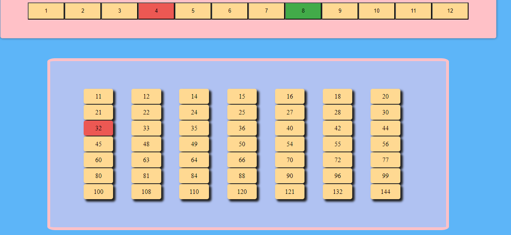

Reglas
1 - El juego se puede jugar solamente de a dos personas o en dos grupos.
2 - Se juega por turnos, alternando entre los jugadores.
3 - En cada turno, un jugador coloca una ficha en una casilla vacía del tablero.
4 - El objetivo es conseguir cuatro casillas pintadas o un 4 en raya.
5 - Se gana cuando un jugador logra colocar cuatro fichas consecutivas en cualquier dirección o logra un "4 en raya".
6 - Después de un juego, los jugadores pueden reiniciar y jugar una nueva partida.
7 - ¡Diviértete jugando!
Cómo jugar
1 - El primer jugador (rojo), debe seleccionar dos números de la fila de factores: puede optar por dos números distintos o por el mismo número.

2 - La multiplicación de esos números, será remarcada en la grilla de la parte inferior con color rojo.

3 - El jugador oponente (verde), tendrá que seleccionar el número que quiere desmarcar, para luego marcar otro. Ejemplo: Aqui desmarcamos el 8 dandole click
3(1) - Y aqui seleccionamos el 5 con el click para marcar el número 20 en la grilla:

4 - Por turnos, se reitera el proceso, y gana el primer jugador que ocupa cuatro números seguidos en línea. La línea puede ser horizontal, vertical u oblicua.
5 - A TENER EN CUENTA: Si usás una combinación que no esté en el tablero, o que ya esté pintada PERDERÁS EL TURNO.
6 - CONSEJO: Podes encerrar a tu rival, dejandolo sin movimientos, por lo que perdera el turno. Ejemplo:
7 - Como se ve arriba, en la regla (6) el jugador no tiene mas combinaciones posibles, por lo que tendra que perder el turno, usalo de manera inteligente!